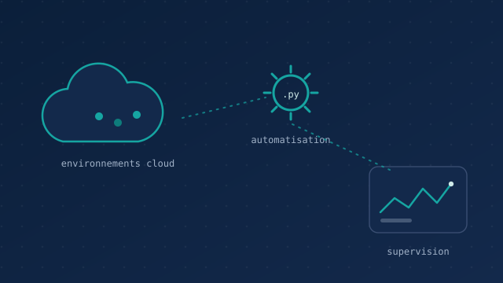

Alternant — Support Cloud IT (BP2I)
Au cœur d'une équipe qui maintient et fiabilise les environnements cloud de la banque, je conçois aussi les outils d'automatisation qui lui font gagner du temps.

Le contexte
J'effectue mon alternance chez BNP Paribas Partners for Innovation (BP2I), à Montreuil, au sein de l'équipe IT Support Cloud. Cette équipe est organisée en plusieurs pôles — opérations cloud, gestion des problèmes, migration vers le cloud, supervision — et je suis rattaché à la sous-équipe Automation & Innovation, surnommée l'« Automation Lab ».
Concrètement, l'équipe gère un catalogue de services cloud (serveurs, NAS, bases de données, répartiteurs de charge) et s'appuie sur des outils d'orchestration comme BPM et Airflow pour industrialiser les opérations.
Mes missions
- Support & incidents — traitement des incidents et des demandes utilisateurs sur les environnements cloud.
- Automatisation — développement de scripts Python pour supprimer les tâches répétitives et fiabiliser les opérations.
- Supervision — surveillance des environnements via les outils de monitoring et remontée des alertes.
- Exploitation cloud — participation au déploiement, à la configuration et à la maintenance des services.
- Animation — j'anime le stand-up hebdomadaire de l'équipe, ce qui m'a beaucoup appris sur la communication et la synthèse.
Ce que j'y construis
Au-delà du support, c'est surtout un terrain pour appliquer l'IA et l'automatisation à des besoins réels. J'y ai mené trois projets que je détaille dans la section projets : un moteur de tagging automatique d'incidents, un chatbot RAG sur la documentation interne, et un script d'analyse des SLA aujourd'hui en production.
Ce que ça m'apporte
Cette alternance m'a appris à livrer dans un cadre exigeant : fiabilité avant tout, documentation soignée, et toujours penser à la personne qui utilisera l'outil après moi. C'est exactement cette approche que je veux approfondir en cycle ingénieur, côté data & machine learning.